帛琉
【景點介紹】 |
|
|||||
|
人文 當地居民約20,000人，其中大部分為帛琉土著，屬密克羅尼西亞人。少數族裔有來自菲律賓為主的亞洲人和少量歐洲人。三分之二的居民信奉基督教，當中天主教徒佔大多數，其餘的信奉其他新教派系。除了基督教外，當地一種叫Modekngei的地方宗教也十分流行。 |
|||||
|
地點：帛琉 |
|||||
| 有彩虹盡頭之稱的帛琉，之前連續被世界知名的洛戴爾潛水雜誌（Rodale’s Scuba Diving Magazine）評選為世界上最棒的潛水景點之一。當地的潛水條件極佳，並擁有完整的海洋生態與現代化的旅遊設施，使得帛琉一直是舉世公認最值得前往潛水旅遊的好去處。海面下的能見度極高，除了生態豐富外，還有精彩的海底峭壁、神祕的沈船和戰機殘骸。當然，也很有機會與大型海底生物相遇，包括到處可見的鯊魚喔，這趟海底之旅保證刺激過癮！ | |||||
| 帛琉共和國是個極適合發展潛水旅遊的國度，它是由八個連綿的島嶼與無數的小島所組成的國家，每座島嶼都充滿不同的特色；北方諸島多為火山島，南方則多為珊瑚礁島。四季如夏，年平均溫度攝氏二十九度，平均水溫攝氏二十七度～二十九度，非常適合潛水旅遊。 |
【著名潛點】 |
|
|||||
|
|||||
|
【建議行程】 |
-
龍馬號船宿
行程說明
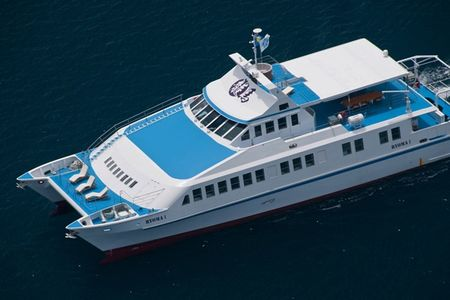 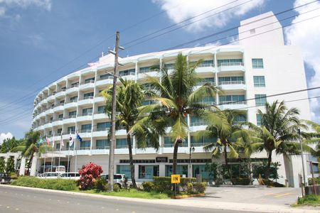 第一天 台北-帛琉
早上11:00在桃園機場第一航站，華航航空櫃台集合，搭乘飛機前往帛琉，在機上享用機上午餐，到帛琉後，會先至路上的漢堡店享用晚餐，隨即轉車到馬拉卡爾碼頭，準備登上龍馬一號船宿船。
早餐：自理，中餐：機上餐，晚餐：自理，住宿：龍馬一號第二天 ～ 第四天 船宿~龍馬號
這三日安排總共安排11支的船宿船潛，三餐皆都在船上享用喔！
早餐/午餐/晚餐：龍馬一號船上buffet，住宿：龍馬一號第五天 帛琉-台北
早上睡到自然醒, 回程會先前往牛奶湖，預計下午三點左右下船前往機場，搭機返回台北。
早餐/午餐：龍馬一號船上buffet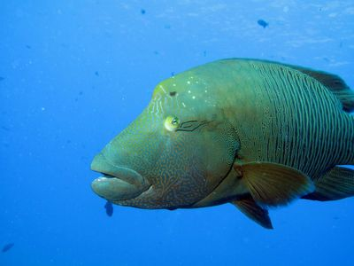 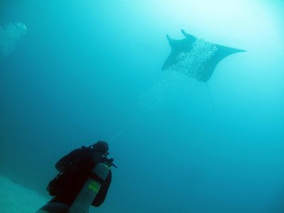 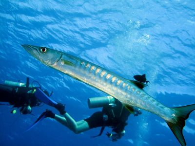 費用說明
行程費用及更多活動詳情請洽iDiving Line@
費用包含： ２夜住宿、３簡餐、船潛２趟共４支、三佰萬旅遊平安險。 不包含： 潛水裝備租借的費用及個人性質的花費。台北來回墾丁的費用。 如需共乘來回台北墾丁每人車資 2,000 元 立即報名 -
獵人三號船宿
行程說明
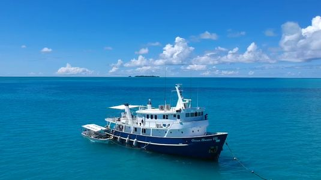 第一天
11:15於桃園第一航廈集合，搭乘13:15的華航CI 28 飛往帛琉18:15 機場，接送至潛水中心報到後，至旁邊碼頭登上海洋獵人III。第2~6天
航程會從科羅出發依次會經過烏龍區域、德國水道區域、貝里琉區域，可選其中一天安排水母湖行程（自費水母湖稅金）。
每日行程如下：
起床06:00-6:30，享用咖啡、茶和麵包
早餐08:30、午餐12:00、晚餐19:00
日間潛水07:00、10:00、13:00、16:00
視情況進行夜潛18:00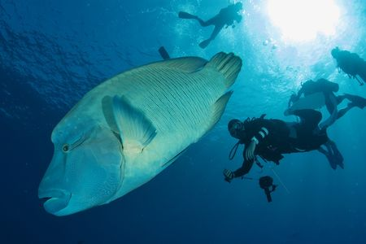 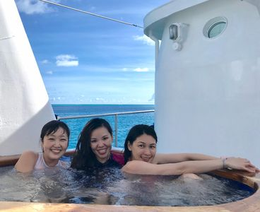 第7天
在烏龍（Ulong）海域潛水後，我們將回到科羅。預計傍晚時間返回碼頭，船員將會幫您清洗潛水器材。本日無夜潛計畫。第8天
早上7:00享用早餐後，于8:00離開海洋獵人III。預計自費半日陸遊。17:05至機場搭乘19:05的華航CI27班機返回台北，預計抵達時間21:45。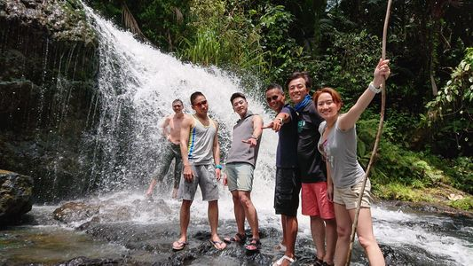 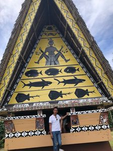 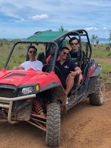
【注意事項】
|
【協辦旅行社】
iDiving 為了讓旅遊活動有保障，所有旅遊行程特別與旅行社偕同舉辦，讓你玩得開心又有保障。
| 主辦單位 | 愛潛水股份有限公司 | 承辦人：愛潛水 | 行動電話：0909-097696 |
| TEL：02-2882-7696 | FAX：02-2882-7656 | ||
| E-MAILl：info@idiving.com.tw | |||
| 地址：台北市士林區前港街8號 | |||
| 協辦單位 | 萬陽旅行社有限公司 | 業務請洽：蘇恒璀 | 行動電話：0937-196518 |
| TEL：02-2517-1333 | FAX：02-2508-1537 | ||
| E-MAIL：tracy410@ms45.hinet.net | |||
| 地址：台北市南京東路3段91號四樓之三 | |||